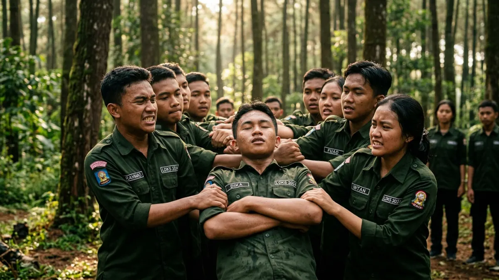

Games outbound untuk LDKS adalah permainan kelompok yang dirancang melatih kepemimpinan, kerja sama, dan komunikasi siswa melalui aktivitas fisik maupun strategi sederhana di alam terbuka.
DAFTAR ISI
1. Apa Saja Contoh Games Ice Breaking untuk LDKS?
Contoh games ice breaking untuk LDKS meliputi permainan tebak nama, estafet sederhana, dan yel-yel kelompok yang bertujuan mencairkan suasana di awal kegiatan.
Games ice breaking biasanya ditempatkan di sesi pembuka LDKS karena berfungsi membangun keakraban antar peserta yang belum saling mengenal, terutama pada kegiatan orientasi siswa baru.
Contoh permainan yang umum digunakan antara lain permainan tebak nama dengan gerakan lucu, estafet sederhana memindahkan barang antar kelompok, serta pembuatan yel-yel kelompok yang akan digunakan sepanjang acara berlangsung.
Durasi games ice breaking sebaiknya tidak terlalu lama, cukup 15 hingga 30 menit, agar energi peserta tetap terjaga untuk sesi games inti berikutnya.
2. Apa Tujuan Games Kerja Sama Tim dalam LDKS?
Tujuan games kerja sama tim dalam LDKS adalah melatih komunikasi, koordinasi, dan pembagian peran antar siswa dalam menyelesaikan tantangan kelompok.
Games kerja sama tim biasanya dirancang agar tidak dapat diselesaikan oleh satu orang saja, sehingga memaksa seluruh anggota kelompok untuk berkomunikasi dan berkoordinasi.
Contoh permainan pada kategori ini antara lain estafet air menggunakan gelas berlubang, menyusun menara dari sedotan dengan waktu terbatas, atau memindahkan bola menggunakan pipa secara berantai.
Setelah games selesai, fasilitator biasanya mengajak peserta berdiskusi singkat mengenai kendala yang dihadapi dan bagaimana kelompok mengatasinya, sehingga siswa dapat menarik pelajaran mengenai pentingnya pembagian peran yang jelas.
3. Apa Tujuan Games Kepemimpinan dalam LDKS?
Tujuan games kepemimpinan dalam LDKS adalah melatih siswa mengambil keputusan cepat, mengarahkan anggota kelompok, dan bertanggung jawab atas hasil keputusan yang diambil.
Games kepemimpinan biasanya menempatkan satu siswa sebagai pemimpin kelompok secara bergiliran, misalnya dalam permainan memandu anggota kelompok yang matanya ditutup melewati rintangan hanya dengan instruksi suara.
Melalui games ini, siswa belajar bahwa kepemimpinan bukan hanya soal memberi perintah, tetapi juga soal tanggung jawab terhadap keselamatan dan keberhasilan anggota tim yang dipimpin.
Games kepemimpinan sebaiknya dirancang agar setiap siswa mendapat giliran memimpin, sehingga pengalaman belajar tidak hanya dirasakan oleh siswa yang secara alami lebih dominan dalam kelompok.

Games trust fall melatih kepercayaan antar anggota kelompok. (Ilustrasi)4. Apa Tujuan Games Kepercayaan seperti Trust Fall?
Tujuan games kepercayaan seperti trust fall adalah membangun rasa saling percaya antar anggota kelompok melalui aktivitas yang membutuhkan kesiapan fisik dan mental dari peserta lain.
Trust fall merupakan games di mana satu peserta menjatuhkan diri ke belakang dan dipercayakan untuk ditangkap oleh anggota kelompok lainnya.
Games jenis ini perlu diawasi ketat oleh fasilitator berpengalaman untuk memastikan keselamatan peserta, termasuk memastikan jumlah dan posisi penangkap sudah tepat sebelum permainan dimulai.
Selain trust fall, games kepercayaan lain yang lebih ringan dan cocok untuk siswa usia SMP dapat berupa berjalan dengan mata tertutup dipandu instruksi teman sekelompok tanpa risiko fisik yang tinggi.
5. Bagaimana Cara Memilih Games Sesuai Usia dan Jumlah Peserta?
Cara memilih games sesuai usia dan jumlah peserta adalah dengan menyesuaikan tingkat kesulitan fisik untuk siswa yang lebih muda dan menyesuaikan jumlah kelompok kecil agar setiap peserta tetap terlibat aktif.
Untuk siswa SD dan SMP, sebaiknya dipilih games dengan risiko fisik rendah dan instruksi yang sederhana, sedangkan siswa SMA atau mahasiswa dapat diberikan games dengan tingkat kompleksitas strategi lebih tinggi.
Dari sisi jumlah peserta, kelompok kecil beranggotakan 6 hingga 10 orang per tim umumnya lebih efektif dibanding kelompok besar, karena setiap anggota memiliki kesempatan lebih besar untuk berperan aktif dalam permainan.
Fasilitator berpengalaman biasanya juga menyiapkan variasi tingkat kesulitan games secara langsung di lapangan, menyesuaikan dengan respons dan energi kelompok yang sedang mengikuti kegiatan.
6. Kesimpulan
Games outbound untuk LDKS sebaiknya dipilih berdasarkan tujuan pembelajaran yang ingin dicapai, mulai dari mencairkan suasana lewat ice breaking, melatih kerja sama tim, mengasah kepemimpinan, hingga membangun kepercayaan antar anggota kelompok.
Setiap games idealnya diakhiri sesi refleksi agar nilai pembelajaran tersampaikan dengan jelas kepada siswa.
Untuk menentukan lokasi yang mendukung rangkaian games ini, simak pembahasan tempat outbound di Batu Malang untuk LDKS, gathering, dan team building, serta panduan umum memilih tempat outbound di Malang untuk sekolah dan perusahaan.